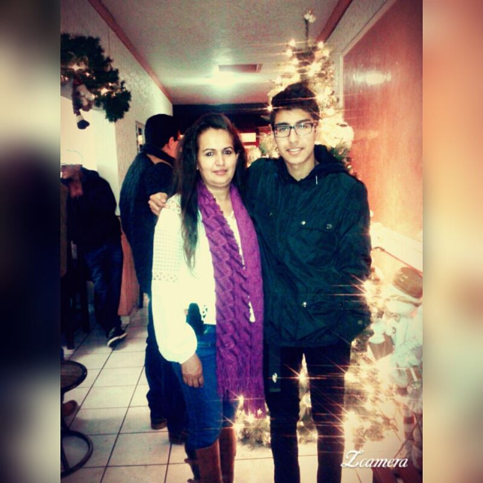
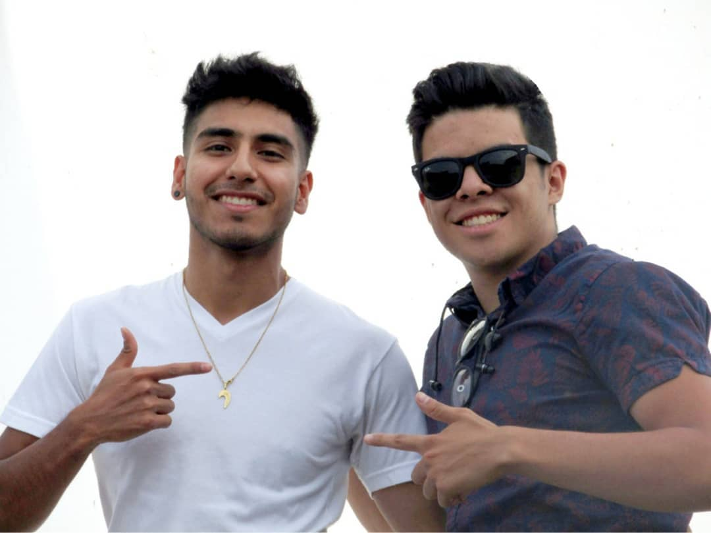
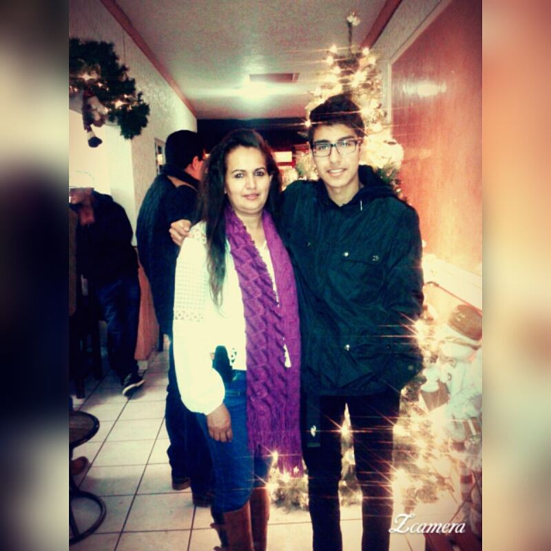
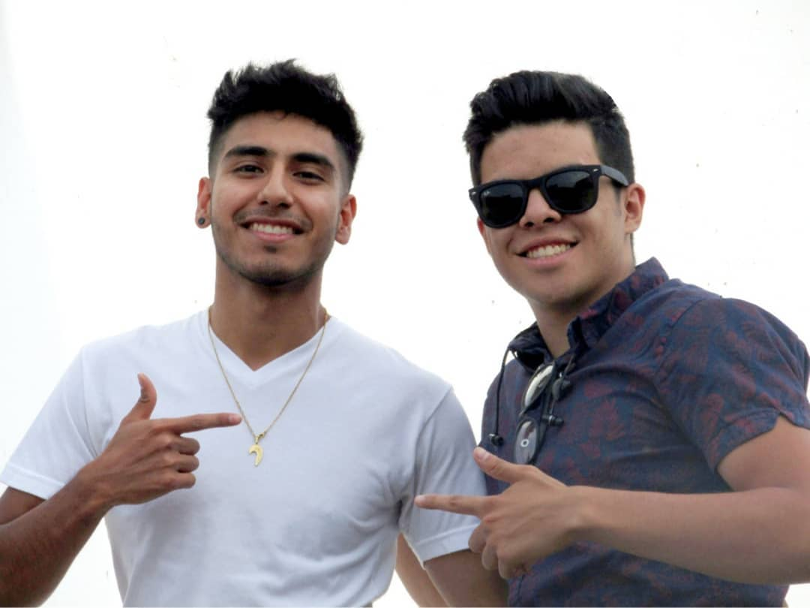

Mi nombre Ulises Bedolla Gonzalez soy del municipio de Uriangato GTO naci en morelia michoacan pero radico en uriangato. durante mi instancia en el municipio, la secundaria la hice en la escuela ESOE, despues de salir de la secundaria hice el bachillerato en el CBTIS 217, durante ese proceso me ha gustado mucho lo que es la TICs, me gusta todo lo referente a las computadoras desde el software hasta el hardware, dentro de la instancia de la prepa nos preparamos para armar y desarmar computadoras, a dia de hoy gracias al trabajo y esfuerzo pude armar una computadora desde cero.
 


